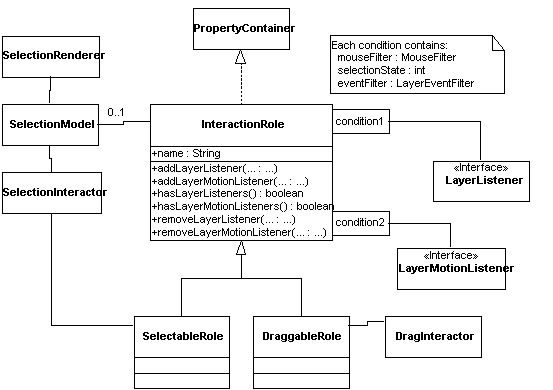

Interaction roles
[Incomplete]Each figure may have associated with it an interaction role. The interaction role answers the question "What does this figure do when I mouse on it?" Typically, a 2D application will have a large number of figures, which can be subdivided into distinct subsets according to their interactive behavior. A simple graph editor, for example, has two such sets: nodes, and edges. To give these figures the correct behavior, each will have a reference to the "node role" or the "edge role," as appropriate.

In order to allow roles to have arbitrary properties that can be set and accessed by clients, InteractionRole implements PropertyContainer, which essentially defines a simple hashtable-like interface.
When a figure is clicked-on, its interaction role adds it to a selection model. [FIXME]